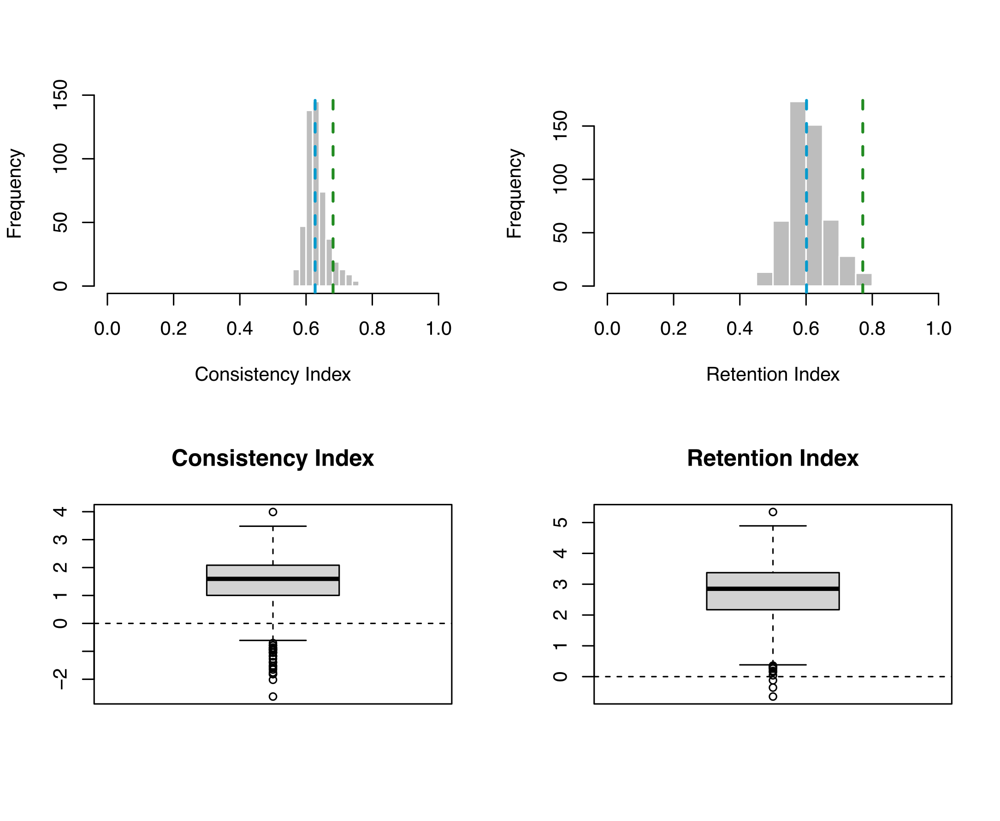

Overview
This tutorial presents a general approach for using posterior predictive simulations (PPS) to determine the adequacy of morphological substitution models. PPS assess the reliability of an evolutionary model for a given data set through the use of simulations and a number of test statistics. In this way, it is possible to determine whether a model is adequately capturing the evolutionary dynamics of the data set or not.
Introduction
Understanding morphological evolution is an extremely difficult task. Within palaeobiology there are a small number of relatively simple evolutionary models to describe this complex process. Assessing the fit of these models to individual data sets is therefore crucial in order to have confidence in the inference results. Posterior prediction is a Bayesian approach to assess the fit of a model to a given data set (Bollback 2002; Brown 2014; Höhna et al. 2018). PPS works by simulating data sets based on parameters sampled from the posterior distribution, () . If the simulated data is found to be similar to the empirical data, according to the chosen test statistics, you can have confidence that the model is capturing the properties of the empirical data and can be used for an analysis. In this way, PPS provides the absolute fit of an evolutionary model to a given data set.
In this tutorial, we will walk through how to use PPS to detemine the fit of a model to a data set of Hyaenodontidae taken from (missing reference) We will test two models in this tutorial. Each test is completely seperate from the other as we are determining the absolute fit of the model to the data set.

Substitution Models
The models used here are described in more detail in the tutorial Discrete morphology - Tree Inference. For a better understanding of the assumptions of these models, consult the previous tutorial. We provide scripts for two subsitution models here:
-
Mk substitution model (Lewis 2001)
-
MkVP+G substitution model (Lewis 2001)
Assessing Model Fit with Posterior Prediction
Here we will highlight the main parts of the analysis. The morpholgoical data used here is of Proviverrine hyaenodontids from (missing reference). The data set contains 15 taxa, 65 characters with 5 character states. To quickly run the entire PPS pipeline
you can run the pps_analysis_Mk.Rev script. To run this type the following command into
RevBayes
source("scripts/pps_analysis_Mk.Rev")
The test statistics and P-values can then be calculated by running the Test-stats.r scripts in r studio.
Empirical MCMC Analysis
The initial step in PPS involves generating a posterior distribution from which we will later sample from, in order to simulated new data sets. Here we will specify our dataset, evolutionary model, and run a normal MCMC analysis. This code is in the pps_analysis_Mk.rev script.
Set up the workspace
First, let’s set up some workspace variables we’ll need, and define which substitution model we will use for the analysis, either Mk or MkVP+G.
analysis_name = "pps_morpho_example"
model_name = "Mk"
model_file_name = "scripts/pps_"+model_name+"_Model.Rev"
Next specify and read in the data file.
inFile = "data/Egi_etal_2005.nex"
morpho <- readDiscreteCharacterData(inFile)
Successfully read one character matrix from file data/Egi_etal_2005.nex"
Specify the maximum number of states in the morphological alignment. For morphological data sets this value will change depending on the data set. We need this to construct the Q-matrix of the correct size.
num_states ="5"
Create vectors to store your moves and monitors for the analysis
moves = VectorMoves()
monitors = VectorMonitors()
For the rest of the tutorial you can choose to either use the source() function to run the scripts or copy and paste the each line into revbayes as they are explained.
Specifying the model
Here we will specify both the tree model and the substitution model.
Typing the following command into RevBayes will run the model script.
source( model_file_name )
Processing file "scripts/Mk_Model.Rev"
Processing of file "scripts/Mk_Model.Rev" completed
Opening the model file, we can see how we have set it up.
The first part of the file specifies the tree model. We put a prior on the branch lengths using an exponential distribution with a rate 0.2
br_len_lambda ~ dnExp(0.2)
moves.append(mvScale(br_len_lambda, weight=2))
We then set a uniform tree prior for the tree topology. This prior assumes that no tree is more likely a priori than any other.
phylogeny ~ dnUniformTopologyBranchLength(taxa, branchLengthDistribution=dnExponential(br_len_lambda))
moves.append(mvNNI(phylogeny, weight=num_branches/2.0))
moves.append(mvSPR(phylogeny, weight=num_branches/10.0))
moves.append(mvBranchLengthScale(phylogeny, weight=num_branches))
tree_length := phylogeny.treeLength()
In this script we are specifying an Mk model, where K is the maximum number of
observed states. As the Mk model is a generalization of the JC model this is done using the
fnJC() function. This creates a Q-matrix of size num_states. The resulting Q-matrix
will have equal transition probabilities between all states.
Q := fnJC(int(num_states))
We then create PhyloCTMC object. This joins all the model parameters we created to model
the morphological data. The is then clamped to the sequence evolution model.
seq ~ dnPhyloCTMC(tree=phylogeny, Q=Q, type="Standard")
seq.clamp(morpho)
Finally, we can create a workspace model variable using the model()function. We provide
the model function a single node here using (phylogeny).
mymodel = model(phylogeny)
Run the MCMC
To run the analysis, we need to set up the MCMC. As with the previous scripts you can run this by typing the following command in RevBayes
source("scripts/pps_MCMC.Rev")
In this scripts, we are specifying the number of iterations, the monitors and the burn.
For this analysis we add a different file then the normal set up, the .var file. This file
will be used in the next step to simulate the new data sets.
monitors.append( mnModel(filename="output_" + model_name + "/" + analysis_name + "_posterior.log",printgen=10, separator = TAB))
monitors.append( mnFile(filename="output_" + model_name + "/" + analysis_name + "_posterior.trees",printgen=10, separator = TAB, phylogeny) )
monitors.append( mnScreen(printgen=1000, tree_length) )
monitors.append( mnStochasticVariable(filename="output_" + model_name + "/" + analysis_name + "_posterior.var",printgen=10) )
Now that we have our model, moves, and monitors set up we can define our MCMC. This is done
using mcmc() function.nrunsspecifiies that there are two independent mcmc runs during the analysis.
mymcmc = mcmc(mymodel, monitors, moves, nruns=2, combine="mixed")
mymcmc.burnin(generations=200,tuningInterval=200)
Running burn-in phase of Monte Carlo sampler for 200 iterations.
This simulation runs 2 independent replicates.
The simulator uses 4 different moves in a random move schedule with 30.7 moves per iteration
Progress:
0---------------25---------------50---------------75--------------100
********************************************************************
To start the MCMC then run the following command
mymcmc.run(generations=10000,tuningInterval=200)
Running MCMC simulation
This simulation runs 2 independent replicates.
The simulator uses 4 different moves in a random move schedule with 30.7 moves per iteration
Iter | Posterior | Likelihood | Prior | tree_length | elapsed | ETA |
-----------------------------------------------------------------------------------------------------------------------
0 | -996.887 | -1026.4 | 29.5141 | 5.267817 | 00:00:00 | --:--:-- |
1000 | -991.783 | -1020.93 | 29.1461 | 5.635822 | 00:00:05 | --:--:-- |
2000 | -993.55 | -1023.25 | 29.7004 | 5.081564 | 00:00:11 | 00:00:44 |
3000 | -984.413 | -1014.64 | 30.2221 | 4.559854 | 00:00:16 | 00:00:37 |
4000 | -986.254 | -1016.16 | 29.9079 | 4.874004 | 00:00:22 | 00:00:33 |
Once the analysis is finished you can generate a most credible clade summary tree using the mccTree() function.
trace = readTreeTrace("output_" + model_name + "/" + analysis_name + "_posterior.trees")
mccTree(trace, file="output_" + model_name + "/MCC.tre")
MCMC output
As output from the analysis, you should have folder named output_Mk in your current directory. This file contains the log files and trees from both runs and a combination of both. You should use programs like Tracer to check for convergence at this stage.
Before moving on to the next section it is important to clear the RevBayes environment of all the variables created
during the previous step. This can be done using the following clear()function.
clear()
Posterior Predictive Data Simulation
In this section we will simulate new data sets based on the parameters sampled in the .varfile in part one of this
tutorial.
We first have to load the data and set up the model as we did in the previous step. As we went through this above you can simply copy and paste this into the terminal.
inFile = "data/Egi_etal_2005.nex"
analysis_name = "pps_morpho_example"
morpho <- readDiscreteCharacterData(inFile)
model_name = "Mk"
num_states ="5"
source( model_file_name )
The scripts pps_Simulation.Rev contains the code to simulate new data.
First we read in the trace file created during the previous MCMC.
trace = readStochasticVariableTrace("output_" + model_name + "/" + analysis_name + "_posterior.var", delimiter=TAB)
Now we use the posdteriorPredictiveSimulation() function to set up the simulations. We provide the function with the
model, and output directory and the trace file.
pps = posteriorPredictiveSimulation(mymodel, directory="output_" + model_name + "/" + analysis_name + "_post_sims", trace)
To start the simulation we use the pps.run()function. Here we can specify how many data sets we want to simulate by
setting the thinning. The .varfile` contains a number of phylogenetic trees. If thinning is set to the default (0) the
pps.run() function will simulate data for each tree. Setting thinning to 2 will simulate along every second tree and so
on. In this way setting thinning = 2 simulates data for half of the trees in the .var file. Simulating 500 data
sets has been found to be sufficient for these types of analysis. If you increase the number of iterations in the MCMC
you may want to increase the thinning value here. Here we set thinning to 4.
pps.run(thinning=4)
Once you run this command a file should be created in the output_Mk directory called pps_morpho_example_post_sims. This is where all of the data simulated in revbayes will be stored. This simulation step should only take a few minutes.
Calculating the P-values and effect sizes for the Test Statistics
To determine if a model is adequate or not we need to compare the empirical data with the newly simulated data sets. If
the simulated data sets are not significantly different from the empirical, we can conclude that the model is adequate
for the data set. Here we use two test statistics, Consistency Index and Retention Index.
Consistency Index is a measure of homoplasy in the data and retention index measures the number of synapomorphies. These
test statistics are calculated in R using the Test-stats.r script.
This script calculates posterior p-values and effect sizes to determine the adequacy of the model. Here we calculate 4 p-values, lower 1-tailed, Upper 1-tailed, 2-tailed, and the mid-point p-value. Values of less than 0.25 or greater the 0.975 indicate significance. The effect sizes can also be used to determine the adequacy of a model, though the p-values are considered more conservative. For the effect sizes, if the maximum and minimum value range through zero a model can be considered adequate.
Visualising the results

The Mk model would not be considered accurate for this data set. While it does well according to the retention index, the consistency index determined the simulated data to be significantly different to the empirical.
Additional Exercise
Now that you know the Mk model is not appropriate for the data set try the MKVP+G model. Is this model better? Use the following command to rerun the entire analysis using the other model.
source("scripts/pps_analysis_MkVP+G")
- Bollback J.P. 2002. Bayesian model adequacy and choice in phylogenetics. Molecular Biology and Evolution. 19:1171–1180. 10.1093/oxfordjournals.molbev.a004175
- Brown J.M. 2014. Predictive approaches to assessing the fit of evolutionary models. Systematic Biology. 63:289–292. 10.1093/sysbio/syu009
- Höhna S., Coghill L.M., Mount G.G., Thomson R.C., Brown J.M. 2018. P^3: Phylogenetic Posterior Prediction in RevBayes. Molecular Biology and Evolution. 35:1028–1034. 10.1093/molbev/msx286
- Lewis P.O. 2001. A Likelihood Approach to Estimating Phylogeny from Discrete Morphological Character Data. Systematic Biology. 50:913–925. 10.1080/106351501753462876